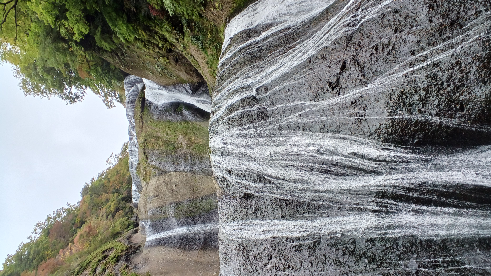
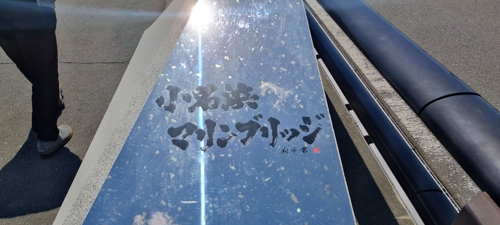
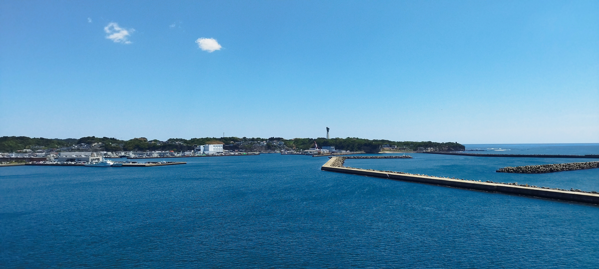
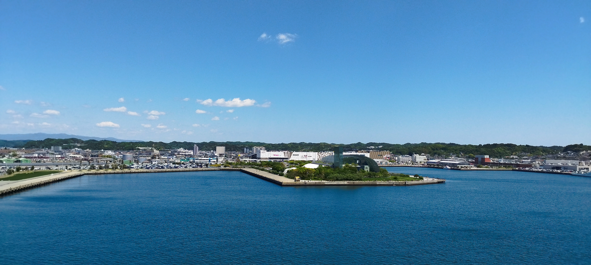
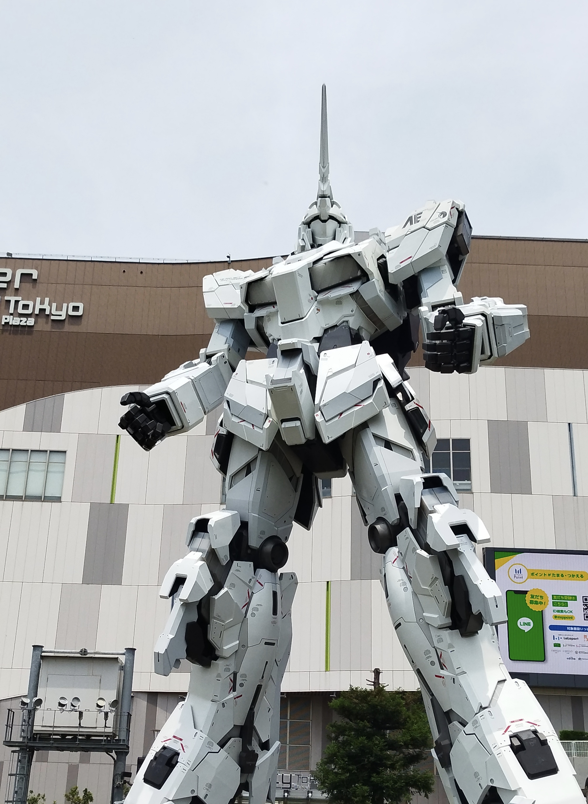
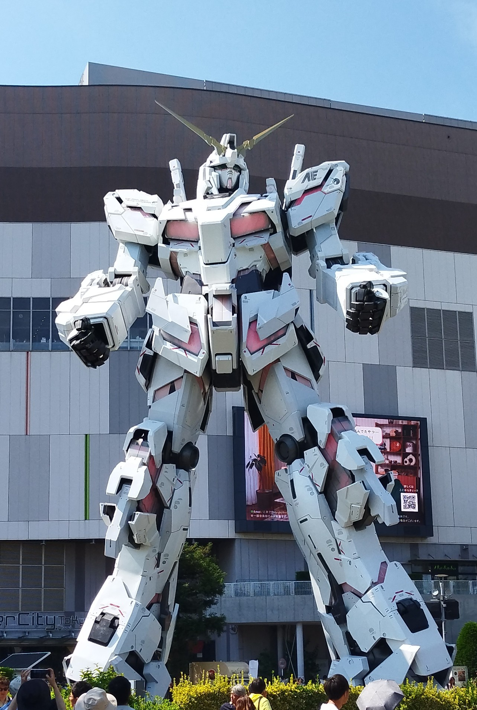
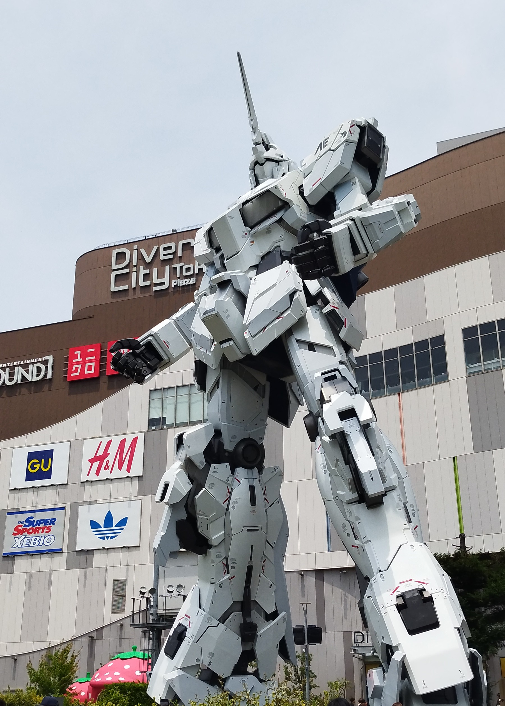
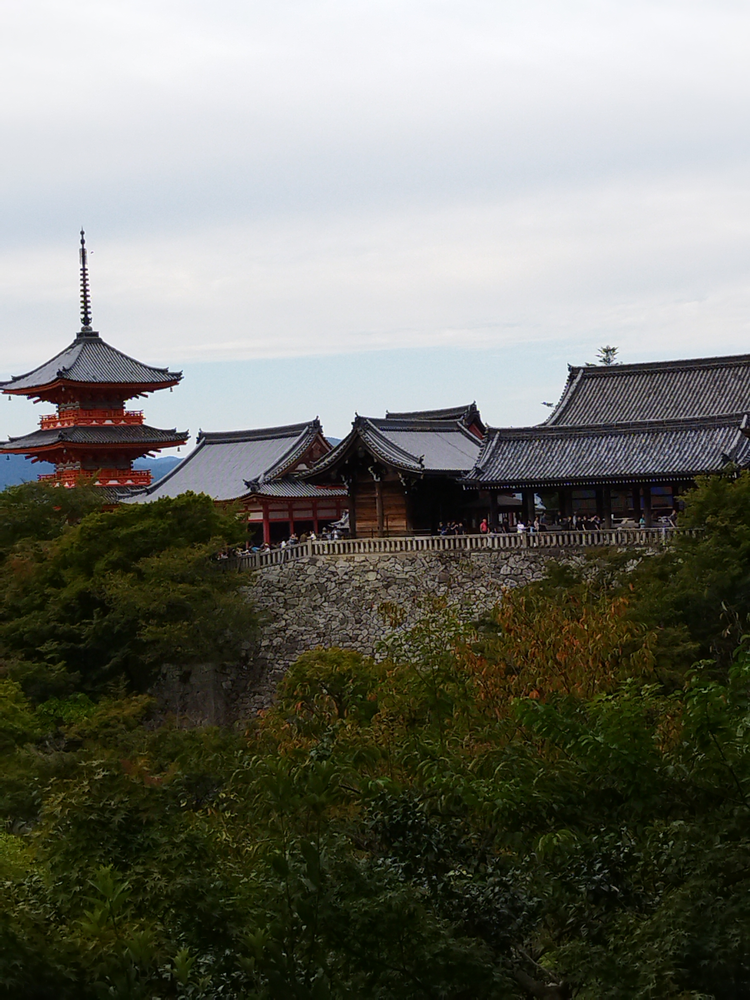
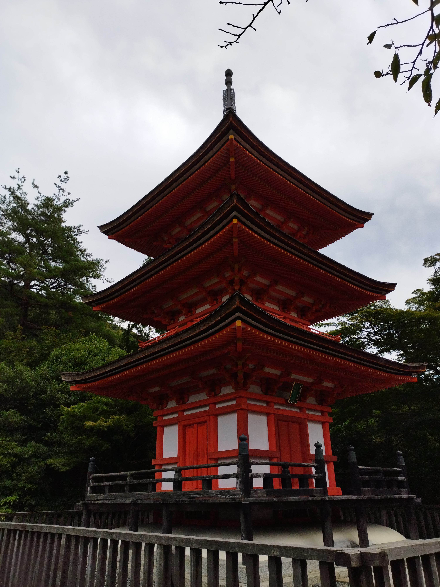

スライドショー
今までに行ったことがある場所でお気に入りな場所ランキング！！
1～5位まで紹介！
第１位 華厳の滝
華厳の滝は栃木県日光市にある日本三名瀑に数えられるうちの一つです！
さすが、日本三大名瀑、、、見た瞬間に目や耳といったあらゆる感覚が奪われました。こんなにも自然は美しいのか…！ぜひ実際に見てみることをお勧めします！！！
第２位 袋田の滝
袋田の滝は茨城県大子町にある「華厳の滝」と同じく日本三大名瀑に数えられる滝です。袋田の滝は他の滝とは違い水流が巨大な岩壁を４段に落ちることが特徴です。また４段に落ちることから「四度の滝」とも呼ばれています。袋田の滝は特に秋がお勧めで紅葉とのコラボレーションが最高なため、人生でぜひ見てみたいものとして上位に入ってくると思います（主観）。



第３位 小名浜マリンブリッジ
小名浜マリンブリッジは福島県いわき市にある通常工事車両しか立ち入ることのできない立ち入り禁止の連絡橋です。この日はちょうどゴールデンウィークだったため一般開放として入場することができました。この橋を渡りながら周辺を見てみると、普段見ている水平線のさらに奥を見ることができ海の広大さを改めて思い知りました。またマリンブリッジの近くにはアクアマリン福島や、いわきら・ら・ミュウといった新鮮な海鮮を取り扱った市場などもあり満喫することができます！おすすめです！！



第４位 実物大ユニコーンガンダム立像
実物大ユニコーンガンダム立像は東京都江藤区にある「機動戦士ガンダムユニコーン」に登場するモビルスーツを実際に大きさで表現した像です。これは約９年前に作られて今まで多くの観光客に親しまれてきました。
私自身ガンダムが好きなので実際に見ることができて感動＆感激しました。こんなにかっこいいユニコーンガンダムですが、２０２６年８月末をもって展示終了してしまうので、もっとたくさん見たかったなと思いました。最高の思い出をありがとう「ユニコーンガンダム」また逢う日まで！！！



第５位 清水寺
清水寺は、京都府京都市にある言わずと知れた超有名な寺院です。私は、高校の修学旅行で初めて京都を訪れ、実物を見ました。今まで写真でしか見たことがなかったので美しい自然と相まって素晴らしい思い出を作ることができました。関西はあまりいけないので思い出としては最高です！



ホームへ戻る